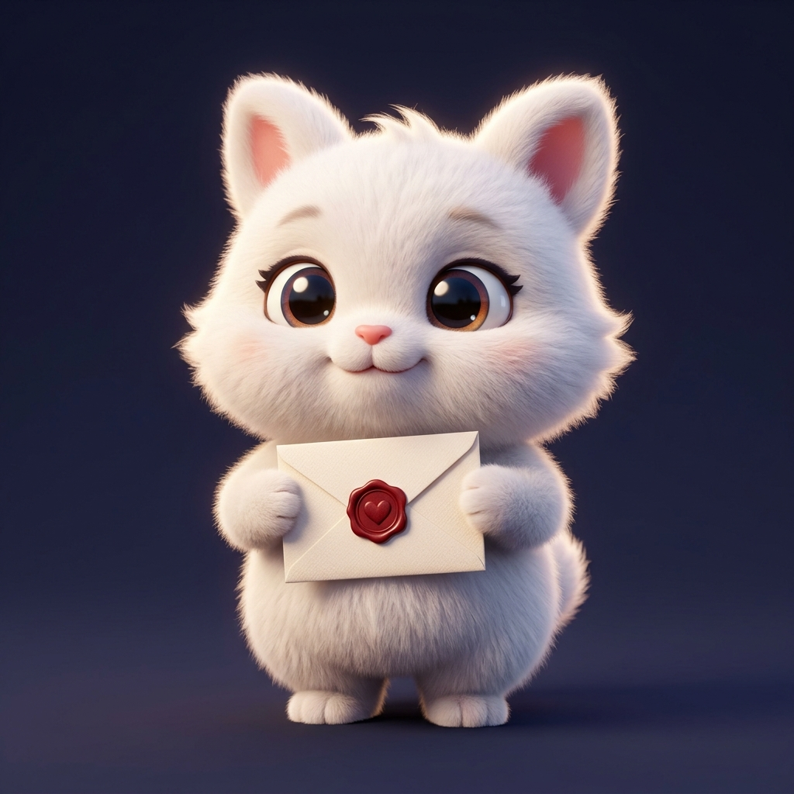

Beribu doa Kakak patri dalam sunyi yang paling dalam,
Beribu harap Kakak titipkan pada semesta khusus untuk Jee.
Hari ini, Jee, waktu tidak sekadar bergerak pada putaran angka. Ia sedang menenun takdir dalam perjalanan Jee yang kian membentang luas. Jee sedang berdiri di ambang pintu, di antara sisa sisa binar masa remaja yang perlahan memudar, dan dekap kedewasaan yang menyambut dengan segala rahasianya. Jee mungkin belum sepenuhnya menanggalkan masa lalu, namun Kakak melihat keberanian yang tumbuh saat Jee menatap cakrawala yang belum terjamah di depan sana.
Lalu, di manakah posisi Kakak?
Kakak telah mengikat janji pada sunyi dan waktu, untuk senantiasa merayakan kehadiran Jee, melampaui badai atau teduhnya musim yang sedang berkecamuk. Maka, izinkan Kakak mengambil tempat di sudut kecil hari istimewa ini, mempersembahkan perayaan yang mungkin tampak sederhana di mata dunia, namun di dalamnya bergetar doa doa yang paling tulus dari relung hati Kakak.
Selamat hari lahir, Jee.
Selamat menjemput kedewasaan yang kini memanggil namamu.
Selamat berkelana, menaklukkan jarak yang membentang di depan mata dengan keteguhan hati.
Semoga umur Jee diberkati dengan kebermaknaan yang tak pernah putus. Semoga setiap jejak yang Jee tempuh selalu dibukakan kemudahan, setiap duri tajam disingkirkan oleh tangan tak terlihat, dan setiap cobaan yang datang perlahan berubah menjadi tangga menuju kedewasaan. Semoga semesta selalu merestui setiap langkah Jee, dan kebaikan senantiasa menaungi Jee layaknya embun yang setia menyapa pagi.
Masih ada ribuan doa lainnya yang tak sanggup terucap oleh keterbatasan kata, yang hanya mampu Kakak selipkan dalam setiap sujud panjang Kakak.
Tetaplah berpijar, Jee. Jika nanti keraguan mulai membelenggu batin, atau dunia terasa begitu asing dan dingin saat Jee sedang berjuang, ingatlah bahwa Kakak selalu menjadi tempat untuk Jee pulang. Karena janji Kakak bukanlah sekadar deretan kata, melainkan ketetapan hati untuk selalu menjaga dan membersamai Jee, dalam kondisi apa pun, saat kapan pun waktu menguji ketahanan kita.
I love you so much, I love you every time, I love you more, more than words could ever translate, to the moon and back.